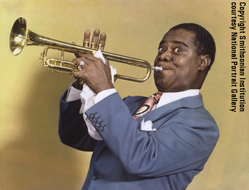

爵士乐(Jazz)，一种起源于非洲的音乐形式，由民歌发展而来。爵士乐以多种形式呈现出繁荣景象，其乐曲风格极其耀眼，节奏一般以鲜明，强烈为主，从根源布鲁斯、拉格泰姆(Ragtime)，经过新奥尔良爵士乐到Dixieland爵士乐、摇摆乐、主流爵士、比波普、现代爵士到自由爵士及电子爵士。
在不到一个世纪的时间内，这种名叫爵士乐（jazz music)的音乐，具有显著美国特色的音乐从默默无闻、起源于民间的音乐发展成为美国本土产生的最有份量的艺术种类。如今在全世界几乎每个角落都有人聆听和演奏它。爵士乐以如此众多的形式出现，而且每一种形式都相当重要，都保持了自己的特色及独具的魅力而流传至今。如果要欣赏各种爵士乐，体会其中种种乐趣，就不能不需要拥有开放的态度，兼容并听。
19世纪期间音乐是美国南部种植园黑人奴隶们表达自我生活和情感的重要手段。从19世纪末开始，爵士乐以英美传统音乐为基础，混合了布鲁斯、拉格泰姆及其它音乐类型，是一种“混血”的产物。美洲的黑人音乐保存了大量非洲特色，节奏特色明显，而且保留了集体即兴创作的特点。这种传统与新居住地的音乐――大部分是声乐――结合起来，结果诞生的不仅仅是一种新的声音而是一种全新的音乐表达形式。
最有名的非洲―美洲音乐是宗教性的。这些优美动人的歌曲白人也听，不过比乡村黑人教堂里演唱的这类歌曲多一分上流社会的味道。今天人们所知道的福音音乐(gospel music)更准确地说是反映了早期非洲裔美洲人的情感力量及旋律感，而不是对二十世纪起初十年中著名的Fisk Jubilee Singers的音乐中宗教性的继承。
其它早期的音乐形式包括可以追溯到蓄奴制时代的做工歌曲、儿歌及舞曲，这些都成为重要的音乐遗产，特别要考虑到在当时的制度下，音乐活动受到相当严格的限制。
|